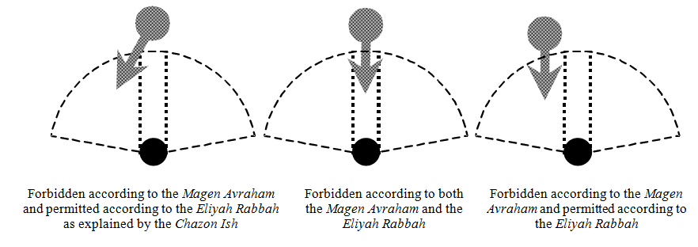

The Amidah prayer is the pinnacle of the prayer service, and all the other preceding sections are, to a great extent, preparations towards it. The person praying rises from level to level, from Korbanot to Pesukei d'Zimrah and from Pesukei d'Zimrah to Birkot Keriat Shema, until he can enter the supreme gate of the world of eminence and stand before Hashem in prayer. This is not to minimize the importance of Keriat Shema, which is a biblical commandment that we are obligated to recite without any connection to the Amidah . Nevertheless, the Chachamim instituted reciting Keriat Shema with its berachot before the Amidah to serve as preparation for it. Through the acceptance of faith in Keriat Shema and its berachot, and by reciting Birkat Ga'al Yisrael, it is possible to rise to the level of prayer in the most complete manner.
Since the Amidah is the pinnacle of the prayer service, the laws regarding it are stricter than those of other prayers. For example, one must recite the Amidah while wearing respectable clothing, for during the Amidah we are standing before the King. This is not the case regarding Keriat Shema and its berachot. Reciting them, we accept upon ourselves the yoke of Heaven, and we praise Hashem, yet we are not on the level of standing before Him (Shulchan Aruch, Orach Chaim 74:6; 91:1).
Many halachot that we have learned concerning the proper place for prayer were stated primarily about the Amidah. These include: not to pray on an elevated place or in an open area; the requirement that there be windows in the place of prayer; that it is a mitzvah to pray in a minyan in a synagogue; that a person must establish a set place to pray; that there must not be anything separating him from the wall; and that one may not pray alongside his rabbi, nor behind him (as explained earlier in this book, chapter 3). Yet, because the Amidah is part of the prayer service as a whole, we try to observe all these halachot throughout the entire service. However, in a situation in which one cannot recite Pesukei d'Zimrah and Birkot Keriat Shema in accordance with these conditions, he must at least make an effort to pray the Amidah in this fashion.
It is customary to take three steps forward prior to praying the Amidah, in order to express one's desire to come closer to Hashem and to stand before Him (Rama 95:1). A person who is already standing in his place of prayer does not need to take three steps back in order to return and step towards prayer. The fact that he came to synagogue demonstrates that he already brought himself closer to prayer and took more than three steps towards it (Eliyah Rabbah). Some say that it is proper even for a person who already walked to his place of prayer to step backwards just before the Amidah and then to take three steps forward again towards his place of prayer (Ben Ish Chai, B'shalach 3; Kaf HaChaim 95:7). Between the steps backwards and the steps forward, it is best to pause slightly, so as not to look like someone who is coming and going. Therefore, when he arrives at "Tehillot L'Kel Elyon," he takes three steps back, and towards the conclusion of Birkat Ga'al Yisrael he takes three steps forward. Similarly, in Minchah and Ma'ariv, already in the beginning of Kaddish before reciting theAmidah, one takes three steps back and then takes three steps forward to begin the Amidah (Minhag Maharil; Mishnah Berurah 95:3).
So as not to interrupt between redemption and prayer, it is proper for the person praying to be strict in taking the three steps before the conclusion of Birkat Ga'al Yisrael, so that immediately after the end of the berachah, he will already be standing in his place of prayer and he will begin to say "Hashem sefatai tiftach," the verse which opens the Amidah.
Prior to reciting the Amidah, a person must remove things that might disturb his concentration. One who suffers from a cold should blow his nose before beginning to pray, so that he will not need to do so in the middle of his prayer. Similarly, one who has any bothersome phlegm in his throat should remove it, so that it will not disturb his prayer (Shulchan Aruch 92:3; and see earlier in this book, chapter 6). If it is necessary to wipe one's nose while saying the Amidah, one must do so in the most polite way possible. Similarly, whoever must yawn while reciting the Amidah must cover his mouth with his hand. The reason for these laws is that a person standing in prayer must be very cautious of the respect of Heaven (kevod Shamayim), and everything that is considered impolite to do before human beings is prohibited to do while praying (see Shulchan Aruch 97:1-2).
During most parts of the prayer service, a person may face in any direction he desires. However, when he arrives at the climax of the prayer service and gets up in the Amidah to stand before the King of the world, he must turn to face Jerusalem, the place that Hashem chose to endow His Shechinah to the world.
One who stands in prayer outside of Israel must face the Land of Israel, and his heart should be directed towards Jerusalem, the home of the Beit HaMikdash (Temple), and Kodesh HaKodashim (the Holy of Holies). If one stands in Israel, he must face Jerusalem, and his heart should be directed towards Beit HaMikdash and Kodesh HaKodashim. If he stands in Jerusalem, he faces the direction where the Beit HaMikdash stood, and directs his heart to Kodesh HaKodashim (Berachot 30a; Shulchan Aruch 94:1).
Therefore, those reciting the Amidah in the plaza in front of the Kotel must turn and face the direction of the exact place of the Beit HaMikdash. In other words, those standing in the open square must turn slightly to the left, and even those standing in the men's section in the closed area next to the wall should do the same.
It is customary to position the aron kodesh on the side of the synagogue that faces Jerusalem, so that those standing in prayer also pray towards the direction of the aron kodesh. However, the primary objective is to pray in the direction of Jerusalem. Therefore, if due to error, or because of circumstances beyond our control, the aron kodesh does not exactly face Jerusalem, the people praying should turn to face the direction of Jerusalem (Mishnah Berurah 94:9). Nevertheless, if the entire congregation mistakenly faces the aron kodesh, it is best not to separate oneself from the congregation; instead, one should stand in the same direction that the congregation faces, but turn his head towards Jerusalem ( Mishnah Berurah 94:10).
One who does not know the direction of Jerusalem may pray to whichever direction he desires while directing his heart towards his Father in Heaven (Shulchan Aruch 94:3). Even if he subsequently discovers that he was mistaken, it is not necessary to repeat his prayer while facing Jerusalem.
During Pesukei d'Zimrah and Birkot Keriat Shema a person is permitted to either sit or stand, but once he reaches Shemoneh Esrei (the Amidah), he must stand with his feet together. When one stands, he summons his complete being, from head to toe, to prayer. In addition, his standing expresses his awe and fear toward the King of the world. Therefore, one must not lean against anything while reciting the Amidah, for anyone who is supported by something even slightly is not considered to be in a state of fear. In extenuating circumstances, for instance, when someone is weak and must lean against something, he should try to lean only slightly, such that if the support should be taken from him, he would remain standing on his own. In that way, although he is not standing in fear, he is at least considered to be praying in a standing position ( Shulchan Aruch 94:8; Mishnah Berurah 22).
One must put his legs together so that they look like one. The reason for this is that the separation of one's legs exposes the material side of a person and represents the pursuit of worldly matters. Thus, we keep our feet together in prayer just like the Kohanim who, in their ascent to the altar, would walk heel to toe to avoid spreading their legs. Furthermore, putting one's legs together symbolizes the annulling of the powers in one's legs, demonstrating that we have but one desire, to stand before Him in prayer. Chazal learn this from the angels, of which it is said (Ezekiel 1:7), "Their legs are a straight leg," meaning, their legs were placed together so that they appeared to be one leg (Berachot 10b; Yerushalmi, chapter 1, halachah 1; and see Maharal Netiv Ha'Avodah 6).
One must put the entire length of his foot next to the other so that they will seem as much as possible as one leg, unlike those who just put their heels together (Shulchan Aruch 95:1; Talmidei Rabbeinu Yonah). However, b'dieved, if one prayed with his feet apart, he still fulfilled his obligation (Mishnah Berurah 1; Kaf HaChaim 2).
A person who is ill and cannot stand may recite the Amidah while sitting. If he is unable to sit, he may pray while lying down. However, according to a number of poskim, if before the time to pray lapses he has gathered strength and is able to stand, he will need to repeat his prayer while standing, since the essence of the mitzvah of the Amidah is in a standing position (Shulchan Aruch 94:9). Nevertheless, in practice, the Acharonim agree that whether he prayed sitting or standing, he fulfilled his obligation b'dieved and even if he is able to stand later, he is not required to repeat his prayer while standing (Mishnah Berurah 94:27; Kaf HaChaim 34).
Even one who must recite the Amidah while sitting or lying down should try to put his feet together and bow his head at the appropriate places. When a person sitting in a wheelchair finishes his prayer, he should wheel himself slightly backwards, approximately the distance of the three steps with which a healthy person departs from prayer (see further in this chapter, halachah 16).
One reciting the Amidah must lower his head slightly, so that his eyes point downwards in the way of humility; he must imagine himself standing in the Temple and directing his heart up towards the heavens (Yevamot 105b; Shulchan Aruch 95:2).
The kabbalists praise one who prays with his eyes closed. However, even a person who looks into his siddur follows the law l'chatchilah. Many Acharonim recommend praying from a siddur, so that one can have more kavanah in his prayer (Mishnah Berurah 95:5; Kaf HaChaim 9-10; and see the words of the Ma'amar Mordechai brought in Bei'ur Halachah).
Regarding one's hands, the Rambam writes (Hilchot Tefillah 5:4) that a person should place his hands on his heart while interlocked, right over left so that he stands as a slave before his master, in awe and fear. That is what the Shulchan Aruch writes (95:3) and what is explained in the Kavanot of the Ari (Kaf HaChaim 95:12). Many maintain that it all depends on the custom of the place; where the Rambam lived, it was, indeed, customary to stand before kings and ministers in the manner in which he described. However, people in other areas practiced differently. For instance, those living in the countries of Edom were accustomed to standing with their arms folded, and those in the land of Ishmael would stand with their hands behind their backs, to symbolically indicate that they do not even have the use of their hands without the consent of the one before whom they are standing (Mahari Abuhav brought by the Beit Yosef; Mishnah Berurah 95:6). Nowadays, according to this, in addition to what the Rambam wrote, it is also permissible to stand with one's hands adjacent to his body or slightly resting on a shtender (lectern) next to his siddur, for that, too, is considered standing respectfully. However, one should not stand with his hands in his pockets or on his hips, for it is inappropriate to stand that way in front of respected people.
Many people are accustomed to "shuckling" (swaying back and forth) while reciting the Amidah. The Rama writes ( Orach Chaim 48; Mishnah Berurah 95:7) that this is the proper way to pray l'chatchilah, in order to express the excitement and trepidation of the prayer experience, and in order to involve one's whole body in the service of prayer, as it is written (Psalms 35:10), "All my bones will say, 'Hashem, who is like You.'" By contrast, the Shlah writes that one should not shuckle during prayer, but just the opposite - that standing motionless strengthens one's kavanah. Furthermore, he says it is not respectful to shuckle. If a person were to come before a human king and begin to shake with his whole body, indeed, the king would immediately dismiss him. If so, one should certainly not act that way in prayer. The Shlah explains that the recommendation to sway specifically applies to Torah learning or to singing songs and praise. However, in the intense and internal prayer of the Amidah, in which we stand before the King, it is not proper to move at all; only one's lips may move (Shlah, Masechet Tamid, Ner Mitzvah). Since each minhag has opinions on which to rely, every person may practice in the way that allows him to concentrate the most. This applies especially to a person who became accustomed to shuckling and therefore finds it hard to concentrate while standing still (Magen Avraham, Mishnah Berurah 48:5; and see Kaf Hachaim 48:7-9).
The Chachamim instituted bowing down in five places in the Amidah: in the beginning and end of Birkat Avot, in the beginning and end of Birkat Modim, and at the end of the Amidah, when one takes three steps backwards. They specifically chose those two berachot for they are the most important, and while reciting them one must try hard to concentrate properly (see Shulchan Aruch 101:1; Mishnah Berurah 3). If a person wants to bow down at the beginning or end of another berachah, he is taught not to, so as not to uproot the ruling of the Chachamim, and so that he will not look like an arrogant person who considers himself more righteous than others. However, in the middle of the berachot he is permitted to bow down (Shulchan Aruch 113:1; Mishnah Berurah 2).
One bows down when saying "Baruch Attah" and straightens himself when saying "Hashem." At Modim, he bows down when he says " Modim Anachnu Lach" and straightens up when saying "Hashem" (Shulchan Aruch 113:7; Mishnah Berurah 12; for the laws on bowing down at the end of the Amidah, see further in this chapter, halachah 13).
The bow must be such that all the vertebrae in one's spine move in place, one after the other, and the vertebrae protrude from his back. One bends his head and back until his face reaches the height between his heart and his waist, but he should not bend his head all the way until his belt, because that gives the appearance of arrogance (yohara). An elderly or ill person who has difficulty bending down lowers his head as much as he is able ( Shulchan Aruch 113:5). One must bow down quickly to demonstrate his desire to bow before Hashem Blessed Be He, and when he straightens himself, he must do so slowly, as one who is interested in continuing to bow down before Him (Shulchan Aruch 113:6).
There are two minhagim regarding the manner of bowing. According to the minhag of the Ashkenazim, when one says "Baruch " he bends his knees and when he says "Attah" he bows until his vertebrae "click". At Modim, in which the word "Baruch" is not recited, one bows immediately without initially bending his knees (Mishnah Berurah 113:12; and see Kitzur Shulchan Aruch 18:1). The Sephardim practice according to the Ari and bow down in two stages. First, a person bends his body (without bending his knees) and then his head. Similarly, when one straightens himself, first he straightens his body and afterwards his head (Kaf HaChaim 113:21).
We learn many essential halachot from the prayer of Chanah, who stood and begged Hashem to remember her and grant her a son. Her prayer was accepted and she merited giving birth to Shmuel the prophet, who was the greatest prophet of Israel after Moshe Rabbeinu. As it says, (1 Samuel 1:13), "Chanah spoke upon her heart, only her lips moved, her voice was not heard." The Chachamim teach, "'Spoke upon her heart' - from here [we learn] that the person praying must direct his heart (have kavanah). 'Only her lips moved' - from here [we learn] that the person praying must mouth the words. 'Her voice was not heard' - from here [we learn] that it is prohibited to raise one's voice while praying" (Berachot 31a).
The primary objective of the Amidah prayer is to express the deep aspirations of one's soul before Hashem, and therefore it is not proper to recite the words aloud and to manifest these desires and needs outwards. On the other hand, one does not fulfill his obligation with thought alone, since every concept must possess a tangible expression in this world. Very often, our inner desires are praiseworthy, but their outer expression is flawed. Therefore, our task is to express our inner good will, in actuality. Hence, even the subtlest mitzvah like prayer requires some sort of expression, by silently articulating the words with one's lips.
There are different minhagim regarding the proper way to pray silently. According to the majority of poskim and a few kabbalists, one reciting the Amidah must utter the words in such a way that only he hears his voice but those praying next to him do not (Shulchan Aruch 101:2; Mishnah Berurah 5-6). According to most kabbalists, the Amidah is so intense and internal that even one's own ear should not hear the words; instead, he should only mouth the letters with his lips (Kaf HaChaim 101:8). It is proper that each person follows his family's minhag, or conduct himself in the way that he can have the most kavanah.
B'dieved , even if a person recites the Amidah out loud, he fulfills his obligation. Therefore, if a person who has difficulty concentrating silently is praying alone, he may pray out loud. However, in a congregation, he may not recite the Amidah out loud under any circumstances, so that he will not disturb the rest of the people praying around him (Shulchan Aruch 101:2). Overall, it is better that he prays in a minyan silently, even if he will concentrate less, for prayer in a minyan is accepted (Mishnah Berurah 101:8).
Regarding the other sections of the prayer service, such as Birkot Keriat Shema and Pesukei d'Zimrah, which are not as internal and intense as the Amidah, all opinions agree that the person praying must hear the words he is reciting. It is even customary to recite the first verse of Keriat Shema aloud in order to arouse kavanah (Shulchan Aruch 61:4). Similarly, one must answer Amen and Baruch Hu u'varuch Shemo out loud, and one must especially try to respond to the Kaddish out loud as well (Shulchan Aruch 56:1).
It is permitted to recite the Amidah in any language (Sotah 32a). However, it is ideal to pray in Hebrew, for that is the language in which Anshei Knesset HaGedolah composed the wording of the prayers. Furthermore, Hebrew is the Holy Tongue, and is the language in which the world was created (see earlier in this book 15:9, that this is also the law regarding Keriat Shema).
Indeed, according to the Rif, only when one is reciting the Amidah in a minyan is he permitted to pray in another language. The reason for this is that the Shechinah dwells with a minyan, therefore his prayer will be accepted even if it is not in the Holy Tongue. However, the prayer of a person who prays individually in a different language will not be accepted. Nevertheless, the majority of poskim agree with the Rosh, who maintains that even one praying individually may pray in another language, as long as it is not Aramaic. This is the halachic ruling (Shulchan Aruch 101:4, based on the rule that the halachah follows the last "yesh omrim," Mishnah Berurah 18).
An additional advantage to praying in Hebrew, untrue of any other language, is that even if the he does not understand Hebrew, as long as he understands the first verse of Keriat Shema, and the first berachah of the Amidah, he fulfills his obligation. In a different language, only the person who understands what he is reciting can fulfill his obligation through translation (Mishnah Berurah 101:14 and 124:2; see earlier in this book 1:10).
In practice, one who does not understand Hebrew is permitted to choose the language in which he wants to pray. On the one hand, there is a benefit to praying in the language that he understands, for it enables him to have more kavanah. On the other hand, if he prays in Hebrew, he merits praying in the Holy Tongue (see Bei'ur Halachah 101:4; Kaf HaChaim 16).
Permission to pray in other languages is granted only as a temporary practice (k'hora'at sha'ah), specifically for people who do not understand Hebrew. However, it is forbidden to organize a minyan of people who pray regularly in a different language. That was one of the sins of the Reform movement, which translated the prayers to German and caused their children to forget the Holy Tongue, leading the way to assimilation and the abandonment of Judaism (Chatam Sofer, Orach Chaim 84 and 86; Mishnah Berurah 101:13; the Seridei Eish 1:9 prohibits reciting even one liturgical poem in a different language).
One reciting the Amidah must have kavanah; that is, he must focus on what he is saying, and he must try not to let his mind be distracted by anything else during the prayer. If other thoughts enter his mind, he must expel them and return to his prayer. Even if he does not succeed in concentrating on all of the words, he must at least try to have kavanah for the conclusion of each berachah. If he cannot concentrate during all of the berachot, he must make an effort to concentrate in Birkat Avot and Birkat Modim, for those are the berachot in which we bow down at their beginning and at their end. At the very least, he must have kavanah in Birkat Avot, the berachah that opens the Amidah.
If a person recited the Amidah and did not have kavanah during Birkat Avot, he must, in principle, repeat his Amidah, because the lack of kavanah during that berachah prevents him from fulfilling his obligation. However, as a result of the deterioration of the generations and troubles on the mind, our ability to concentrate has weakened. Therefore, the Acharonim have instructed not to repeat the Amidah, since it is possible that even in reciting the Amidah a second time, he will forget to have kavanah in Birkat Avot and his repetition will be for naught (Rama 101:1; Kaf HaChaim 4).
A person who is about to finish Birkat Avot and notices that he did not have kavanah in its recital: as long as he has not yet said Hashem's Name at the conclusion of the berachah, he goes back to "Elokei Avraham" and continues from there with kavanah (Mishnah Berurah 101:4, in the name of the Chayei Adam). If he has already said Hashem's Name, he concludes the berachah with kavanah. It is good to go back and think the words of Birkat Avot in his heart, for, in the Rambam's opinion, thought is considered speech (hirhur k'dibur). However, if he already went on to say "Attah gibor," he continues to pray and must try to havekavanah while reciting the remaining berachot, especially Birkat Modim.
Shemoneh Esrei is divided into three parts: praises, requests, and thanksgiving. In reciting the first three berachot, we resemble slaves who offer words of praise before their master. While reciting the middle blessings we are similar to slaves who make requests of their master. When we recite the last three blessings, we are like slaves who gracefully accept reward from their master, then are dismissed and go on their way (Berachot 34a).
We learned this from the prayer of Moshe Rabbeinu, who opened with praise and from there continued to plead and request (Berachot 32a; also see the laws of Pesukei d'Zimrah in this book 14:1). Without the introduction of praise, there is concern that our prayer will resemble the rituals of idol worshipers, whose entire aim is to mystically manipulate the higher powers to work for their benefit. In contrast to them, we want to serve Hashem and devote ourselves to Him, and all we ask is that He bestows abundant goodness and blessing upon us so that we can reveal His Name in the world. Therefore, first, it is incumbent upon us to know before Whom we are standing in prayer. We stand before God, the great, the mighty, and the awesome, the One Who sustains life and resurrects the dead, HaKadosh Baruch Hu. With that understanding, we can approach Him and pray with a pure heart for all of Israel and for ourselves.
Indeed, in the section of the requests, in which there are thirteen berachot, the general ambitions of the nation of Israel are expressed. They are not intended for the individual advancement of the person praying; rather the essence of the requests is about revealing Hashem's glory in the world. Even our personal requests for health and livelihood are to allow us to participate in the rectification of the world (tikun olam). The following are the thirteen themes for which we ask: wisdom, repentance, forgiveness, redemption, health, livelihood, the ingathering of the Jews from the exiles (kibbutz galuyot), the return of justice, the destruction of those who hate us, the blessing for the righteous, the rebuilding of Jerusalem, the re-establishment of the kingship of the house of David, and finally, that our prayers be heard.
After the requests, we end the Amidah with three general berachot, in the center of which is a thanksgiving blessing concerning our lives and all the goodness that Hashem constantly bestows upon us. Before this, we pray for the return of the Temple services, and after it, we recite a berachah for shalom, since shalom is the vessel that encapsulates and sustains all the berachot.
Here is the place to note that the Shemoneh Esrei (which means eighteen) is actually comprised of nineteen berachot. At first, when Anshei Knesset HaGedolah instituted the Amidah, it was made up of eighteen berachot. After the number of slanderers and informers increased, following the rise of Christianity, which preached the hatred of the Jews, the Chachamim instituted an additional berachah for the saving of the nation from the hands of the apostates and slanderers.
Anshei Knesset HaGedolah , in their wisdom and Divine inspiration (ruach hakodesh), included all the ideal aspirations of Am Yisrael in the wording of the prayer. They meticulously chose every word until a perfect wording was established, with which the Jewish soul can express itself before its Creator in the most supreme manner possible.
Even so, if a person wishes to add requests of his own in the middle berachot, he is permitted to do so. However, in the first three berachot, which are intended to praise Hashem, and in the last three, which are intended for thanksgiving, it is prohibited to add personal requests, so as not to detract from their general purpose (Shulchan Aruch 112:1; 119:1).
The personal requests permitted in the middle berachot must be related to the theme of the berachah. For example, if a person in one's household is ill, one should pray for him or her in Birkat Refa'einu. If a person is in need of a livelihood, he should request that inBirkat HaShanim. If he wants his relatives to make aliyah, he should pray for that in Birkat Mekabetz Nidchei Amo Yisrael. However, out of all the berachot, Birkat Shome'a Tefillah is special. In it, one may make all types of requests. Since it concludes the blessings of request, it includes all of them. When one adds his own personal petitions, he begins reciting the established wording, and just before the concluding sentence, inserts his request.
Not only is it permissible to make personal requests, but according to many, it is desirable to do so, since the personal prayers that one adds emerge from the depths of his heart and arouse kavanah. Nevertheless, it is advisable not to prolong one's personal appeals in the Amidah, not even in the berachah of Shome'a Tefillah, because the essence of prayer is directed towards the needs of the community as a whole, and when numerous personal requests are added, the communal character of the prayer is altered. It is best that one who desires to add more personal prayers does so after he finishes reciting all the berachot and says "Yih'yu l'ratzon..." since everything recited after that is not considered to be the main part of the Amidah. Rather, it is a relevant supplement to the prayer, for as long as he has not yet taken three steps backwards, he still stands before the Holy One Blessed Be He (Shulchan Aruch, Orach Chaim 119:2; Mishnah Berurah 119:12).
A person must express his requests in the Amidah properly. Therefore, when praying for an ill person, it is correct to mention his or her name. L'chatchilah, it is good to mention the name along with the mother's or father's name. However, if the sick person is next to him, it is unnecessary to mention his name, for his intention is clear. (Mishnah Berurah 119:2).
In reciting the verse, "Yih'yu l'ratzon...," ("May the expressions of my mouth and the thoughts of my heart find favor before You, Hashem, my Rock, and my Redeemer"), which is said after the blessing for shalom, we end the main part of the Amidah. Therefore, if one hearsKaddish or Kedushah while he is between the berachah and that verse, he may not answer, because that verse is part of the Amidah (Shulchan Aruch and Rama 122:1).
However, from the beginning of Elokai netzor until the second time Yih'yu l'ratzon is recited, one is permitted to respond to Kaddish, Kedushah, Barchu, and Modim - like the law regarding one who is in the middle of Birkot Keriat Shema - because the person praying has already concluded the main part of the Amidah. Nevertheless, since he did not entirely finish the prayer, he is prohibited from answering Amen after berachot or anything similar (Shulchan Aruch there; and see Hilchot Birkot Keriat Shema 16:5).
As we have learned, it is in this section that one may extend his supplication and requests as much as he desires, like it is said about Rabbi Akiva, that when he would pray individually he would prolong his prayer with supplications following the Amidah (see Berachot 31a).
Upon the conclusion of the prayers of supplication, the person praying recites Yih'yu l'ratzon again and takes three steps backwards. If he cannot step backwards because the person behind him is still praying, even though he has not yet departed from the Amidah, he may respond aloud to any matter of sanctity, even "Baruch Hu u'varuch Shemo," since he already finished the supplications after the Amidah. Similarly, he is permitted to continue praying, reciting Ashrei and Aleinu L'Shabe'ach, or he may recite Psalms or learn Torah (see further in this chapter, halachah 20).
Once again, after finishing the Amidah, one must bow down until the vertebrae in his spine protrude, as if they "click." While bowing down, he takes three steps backwards. Subsequently, still bowing, he turns to his left side and says, "Oseh shalom bimromav," turns to his right side and says, "Hu ya'aseh shalom aleinu," bows down in front of him and says, "v'al kol Yisrael, v'imru Amen," and then straightens himself. Many people are accustomed to say afterwards "Yehi ratzon" regarding the building of the Temple. This is because prayer corresponds to the Korban HaTamid. Therefore, we request that the Temple be rebuilt and that we merit bringing the Tamid offering ( Shulchan Aruch Rama 123:1).
The Chachamim say that if a person prays and does not depart from the Amidah properly by taking three steps back and saying Oseh shalom, it would have been better not to have prayed at all (Yoma 53b). One who fails to conclude in this fashion proves that he did not understand that he was standing before the King of Kings, HaKadosh Baruch Hu, and consequently he desecrates the prayer.
When stepping back, one starts by lifting his left leg, the weaker leg, thereby demonstrating his difficulty in separating from prayer. Every step the person takes must be the size of his foot. The order of the steps is as follows: initially, he takes a small step with his left leg, so that the toes of his left foot are adjacent to his right heel. Afterwards, he takes a bigger step with his right leg, so that the toes of his right foot are adjacent to his left heel. Finally, he takes a small step with his left leg to equal out the legs. In that way he ends up standing with his legs together when saying Oseh shalom.
One must be careful not to take a step smaller than the length of his foot, for some poskim maintain that less than that is not considered a step (Magen Avraham). When there is not enough room behind him to take three steps, he must step to his side, making sure that every step is big enough (Aruch HaShulchan 123:5). In a case of extenuating circumstances, when there is no room to step backwards or sideways, he may rely on the opinions which maintain that it is permissible to take three smaller steps. However, one may not take less than three steps in departing from the Amidah before the King (Bach and see Mishnah Berurah 123:14); nor may one take more than three steps, so as not to display arrogance ( yohara) (Shulchan Aruch 123:4). Likewise, it is not proper to take large steps so as not to appear as one who wants to distance himself from the King (Rama 123:3; see Mishnah Berurah 16).
After taking three steps backwards, one must remain standing in that place. He may not immediately return to where he prayed the Amidah, for if he does, he resembles a dog that returns to its vomit (Yoma 53b). The reason for this condemnation is that after separating himself from the King, if he returns to stand before Him, only to wait there without reason, he illustrates that he did not comprehend that he was standing before the King and that he already separated from Him. Therefore, his action is considered disgraceful. There are those who continue to err, and upon returning to their places they lift their heels slightly as done in Kedushah. However, there is no reason for this.
L'chatchilah , one should stand in the place that his steps ended until the chazan arrives at Kedushah, or at least until the chazan starts the repetition of the Amidah (Shulchan Aruch 123:2). According to the majority of poskim, there is no need to remain standing with one's feet together upon the conclusion of Oseh shalom (Mishnah Berurah 123:6; Bei'ur Halachah and Sha'ar HaTziyun there). However, there are those who say that it is good to remain with one's legs together until he returns to his place. (Kitzur Shulchan Aruch 18:13; Kaf HaChaim 123:11 mentions both opinions.)
It is proper that even someone praying individually does not return immediately to his original place, but stops after taking three steps, and waits in his place for the amount of time it takes the chazan to arrive at Kedushah, which is approximately half a minute. In extenuating circumstances, if he must return to his place, he must wait the amount of time it takes to walk four amot and only then return ( Mishnah Berurah 123:11; Kaf HaChaim 20). The chazan who must begin the Amidah repetition, can l'chatchilah wait in the place his steps ended, approximately the walking time of only four amot, and afterwards return to his place, because he is approaching the Amidah prayer again (Rama 123:2). Similarly, one who must make up a missed prayer, and pray a supplementary prayer ( tashlumim), must wait approximately the amount of time it takes to walk four amot and then return to pray (Mishnah Berurah 123:11).
At the end of the Amidah repetition, it is unnecessary for the chazan to take three steps back again, since his prayer is not completely concluded until Kaddish-Titkabal, in which he requests that his prayers and requests be accepted. At the end of Kaddish-Titkabal, he takes three steps back and says Oseh shalom (Shulchan Aruch 123:5). Although in Shacharit we recite Tachanun, Ashrei, and U'va L'Tzion before the Kaddish, and on Mondays and Thursdays the Torah is read, nevertheless, the chazan's separation from the Amidah repetition occurs in the Kaddish-Titkabal recited after U'va L'Tzion. Therefore, the chazan must be strict not to talk from the end of the Amidah repetition until the end of Kaddish-Titkabal (Mishnah Berurah 123:18).
A person who stands in prayer before his Creator is prohibited from talking about other matters in the middle of praying (see further in this book, chapter 18, note 1). It is even forbidden to interrupt by walking or hinting. This is learned from the "kal vachomer" principle - if we stand before a human king in dread, and are careful not to interrupt with other matters, all the more so (kal vachomer) when we stand before the King of Kings.
Even if the king of Israel were to inquire about ones well-being in the middle of the Amidah, it is forbidden to answer him. However, if a non-Jewish king, who is likely to execute him if he does not answer, addresses him in the middle of his prayer, he must interrupt his prayer, for saving a life takes precedence over prayer (Berachot 30b). If a non-poisonous snake is wrapped around his leg, he may not interrupt his prayer. However, if a scorpion or poisonous snake endangers him, he must call for help, for saving a life takes precedence over prayer (Berachot 33a; Shulchan Aruch, Orach Chaim 104:1-4).
Walking is not considered a significant interruption. Therefore when one starts to recite the Amidah in a place where it is hard for him to concentrate, he is permitted to move to a different place. For instance, if a non-poisonous snake approaches him, creating a situation which disturbs his concentration, although the circumstances are not life-threatening, he is permitted to walk to a different place to continue praying with kavanah (Mishnah Berurah 104:10). A similar case is one in which a person is reciting the Amidah and there are adults or children talking around him, disturbing his concentration. If by hinting to them they will be quiet, that is the best course of action, for a hint is considered to be less of an interruption. However, if they don't comply, he may walk to a different place and continue praying there. Likewise, if the congregation is waiting for a rabbi to finish his prayer, and this is disturbing his kavanah, he is permitted to hint to them to start Chazarat HaShatz ( Mishnah Berurah 104:1).
Similarly, if one's child begins to cause a disruption in the middle of the Amidah, so much so that he or other people cannot concentrate properly, he must hint to him to leave. If the child does not understand, the parent must take him out of the synagogue without talking and then continue praying.
If during the Amidah, a problem occurs that if not fixed immediately will cause him damage, he is not permitted to interrupt his prayer ( Mishnah Berurah 104:2; Kaf HaChaim 6). However, if the matter bothers him so much that he cannot concentrate, he is permitted to attend to the problem.
If a siddur falls to the floor and the person reciting the Amidah cannot concentrate until it is picked up, he must first finish the berachah that he is saying, and then he may go pick it up. If a person starts praying by heart, becomes confused, and cannot continue, he is permitted to go get a siddur and continue praying (Mishnah Berurah 96:7). If, in the middle of praying the Amidah, a person is uncertain regarding a law that may prevent him from continuing, such as a case in which he forgot to recite a particular passage and does not know how to continue his prayer, he may peruse through a book to determine the correct practice. If he does not know how to search for the answer in a book, there are those who allow him to interrupt with speech and inquire what the halachah is (Mishnah Berurah 104:2). Likewise, if the telephone rings in the middle of his Amidah, he must continue praying. However, if he cannot maintain his kavanah, he is permitted to disconnect the phone and return to pray.
If one's tallit falls off in the middle of the Amidah, but part of it remains on him, he is permitted to fix it. However, if his entire tallit falls off, he is forbidden to rewrap himself in it, since the act of wrapping constitutes an interruption (Shulchan Aruch 97:4). If being without a tallit disturbs him so much that he cannot concentrate, he may wrap himself in it after concluding the berachah that he is reciting (Mishnah Berurah 97:16). Someone else who sees a person's tallit fall off is permitted to put it back on him ( Kaf HaChaim 27).
While praying the Amidah it is forbidden to respond to Kaddish or Kedushah. However, he may silently concentrate on what the chazan is saying, and it will be considered as if he himself recited those words - and that is the custom. Nevertheless, if such an interruption will disturb his kavanah, he is permitted to continue praying.
A person who is traveling in a car when the time to pray arrives, if he is driving, he is forbidden to recite the Amidah. This is because he cannot concentrate properly, and there is even concern that he may endanger his life or the lives of others. Therefore, he must pull his car over to the side and only then begin to pray.
However, if someone else is driving, who is in a hurry to arrive at his desired destination, a passenger may recite the Amidah while sitting. The reason for this is because if they stop traveling in order to pray standing up, he will be distracted with wanting to finish praying quickly, and he will be unable to have the proper kavanah. Therefore, it is better that he pray Shemoneh Esrei while sitting, since, as we already learned (in halachah 4), b'dieved, the one who recites the Amidah while sitting fulfills his obligation.
Even one who is sitting when reciting the Amidah must put his feet together (Mishnah Berurah 95:2), and try to turn his face in the direction of Jerusalem (Mishnah Berurah 94:15). At the places that the Chachamim instructed to bow down, he must straighten himself slightly and bow as much as he can (Shulchan Aruch 94:5; Aruch HaShulchan 18).
When traveling by bus or train, both of which are more spacious than a car, if one can stand and concentrate properly, it is better that he stand for Shemoneh Esrei. However, if standing will disturb his kavanah, he must sit with his feet together, stand when he needs to bow down, and then sit again. At the end of his prayer, he stands and takes three steps backwards (see Shulchan Aruch 94:5).
When one is traveling at night by bus, and he knows that when he finishes his trip he will still have time to recite Ma'ariv, he should pray after the trip ends (Mishnah Berurah 89:42). However, if he knows that after the trip he will be unable to concentrate properly, because he will be tired and he will want to finish his prayer quickly, he is permitted to pray while traveling (based on Shulchan Aruch HaRav 94:5).
Reciting the Amidah individually while sitting is only permitted on a temporary basis, during a special trip, or in a set of circumstances completely beyond one's control. However, even if it is difficult for a person who travels to work every day to find time to pray while standing, as long as he is not in circumstances beyond his control, he is not permitted to be lenient and pray on a regular basis while sitting. Still, it is permitted to pray regularly on buses that are specifically arranged for people to pray in a minyan while standing, although, l'chatchilah, one should pray in a synagogue. Nonetheless, if those people are hurrying on their way, or rushing to work, and they know that in the synagogue they will pray quickly, but that on the bus they will pray in a more composed manner, it is better that they pray on the bus.
Due to the considerable significance and sanctity of the Amidah prayer, the Chachamim prohibit sitting within four amot of a person who is praying. One reciting the Amidah is standing before the Shechinah, and anyone sitting there idly is seen as someone who does not accept the yoke of Heaven upon himself, thereby desecrating the place of prayer.
However, one who is engaged in a section of prayer is permitted to sit next to a person reciting the Amidah, for since he is engaged in prayer, he does not appear as one who does not accept upon himself the yoke of Heaven. Some say that one who wants to learn Torah is also permitted to sit next to a person praying. In times of need, for instance when a person cannot focus on his learning while standing, it is permissible to be lenient and to sit ( Shulchan Aruch 102:1; Mishnah Berurah 6).
If he sat down next to the person praying before that person started to recite the Amidah, although he is neither praying nor learning he is permitted to continue sitting there. This is allowed because he does not disgrace the prayer, rather it is the person praying who did not act in accordance with the law by beginning to pray within someone else's four amot. Even so, it is, indeed, a righteous act to show respect for the prayer by standing up, or at least by learning Torah or reciting Psalms (Shulchan Aruch, Rama 102:3).
A weak or frail person, even when not engaged in prayer, is permitted to sit within another person's four amot, since everyone knows that it is because of his weakness that he needs to sit, and therefore there is no offense to the respect of Heaven (Shulchan Aruch 102:2). On Yom Kippur, almost everyone is considered to be weak because of the fast, and therefore it is permissible to sit within four amot of a person praying ( Beit Baruch 26:9).
There is a stringent opinion which maintains that it is forbidden to sit directly in front of a person praying, even if he is outside of one's fouramot, since it causes the person who is praying to appear as though he is bowing down to him. Therefore, even if he is reciting Keriat Shema, and he sat there before the other person began to recite the Amidah, he must stand. L'chatchilah, it is good to follow this opinion (Shulchan Aruch 102:1; Mishnah Berurah 9; Kaf HaChaim 10).
The measurement of four amot is approximately two meters (6.56 feet). To be more precise, an amah is approximately the length of the average person's arm. According to the majority of poskim, it is approximately 48 cm (18.898 inches), which means that 4 amot is approximately 192 cm (75.59 inches). However, there is obviously no need to measure the exact distance from the person reciting the Amidah; instead, every person must practice according to his own visual estimation.
It is forbidden to pass within four amot in front of a person reciting the Amidah, since one who passes in front of him is likely to disturb his concentration. There are those who say that the reason for the prohibition is that a person who is reciting the Amidah is standing before the Shechinah and one who passes before him offends the respect for the Shechinah.
The poskim disagree regarding the question of where precisely is it forbidden to pass. According to the Eliyah Rabbah, the prohibition only applies to passing directly in front of the face of one reciting the Amidah, since only then will passing by disturb him. In other words, if the width of a man is approximately half a meter (1.64 feet), one may not pass in that half meter in front of his face for a distance of four amot (approximately 2 meters or 6.56 feet). However, according to the Magen Avraham, it is forbidden to pass anywhere the person praying can see within his four amot, since passing there is likely to slightly disrupt his kavanah.
They disagree further. According to the Eliyah Rabbah, a person is permitted to come and stand within the four amot of a person praying and remain standing there. This is because he only disturbs the person when crosses through the four amot directly in front of his face. However, if he comes from the side and remains standing before him, he does not disrupt him as much. Still according to the Magen Avraham, it is forbidden to enter into the four amot in front of a person praying at all.
L'chatchilah , one should be strict, like the opinion of the Magen Avraham, not to walk within the entire four amot before a person reciting the Amidah. In times of need, however, one may be lenient like the Eliyah Rabbah and permit passing beside a person praying, and likewise passing and standing directly in front of his face.
In a case of great need, when there is no other choice, it is even permissible to pass directly in front of a person reciting the Amidah. For instance, in order to complete a minyan it is permitted to pass in front of someone who is praying. It is permissible for one who must conduct a Torah class, and for a Kohen who must ascend to recite Birkat Kohanim, to pass in front of the person praying. Likewise, whoever fears he will miss his bus or ride is permitted to pass as well.
However, one who arrives late to the prayer service and wants to pray in his regular seat is prohibited from passing in front of the person reciting the Amidah. If only one person is reciting the Amidah where he must pass, he may rely on the Eliyah Rabbah and pass beside him. Yet, if in order to do so he must pass alongside a number of people praying, he may not pass, since it is almost certain that he will disturb at least someone's concentration.
If a person is reciting the Amidah while standing in an aisle, since he did not act in accordance with the law by standing in a place that blocks the walkway of those coming and going, there is no obligation to take him into consideration, and in times of need, it is permitted to pass before his face.
Regarding someone who finishes the Shemoneh Esrei while a person remains standing behind him in prayer, the law is as follows: if he is farther than four amot plus another three steps away from him, so that if he were to take three steps backwards he would not enter into the other's four amot, he may step back. If he is closer, he may not take steps back until the one reciting the Amidah behind him finishes his prayer. Even if the person behind him began praying late and extends his prayer, he is forbidden from stepping into the other's four amot. As we have learned, the Acharonim disagree concerning the parameters of the prohibition.
According to the Magen Avraham, even if the person reciting the Amidah is not standing directly behind him, as long as by taking three steps back he will step into the radius of the four amot in front of him, he must wait until the person behind him finishes his prayer. According to the Eliyah Rabbah, it is only forbidden to step backwards in front of the person praying if he is standing directly in front of him. But if the person praying is not exactly in front of him, he is permitted to take three steps back. L'chatchilah, it is good to practice like the Magen Avraham, though in times of need one may be lenient like the opinion of the Eliyah Rabbah (Mishnah Berurah 102:18-19). Even in a situation in which the person praying is directly behind him, in extenuating circumstances he may step backwards diagonally, for there are those who explain that according to the Eliyah Rabbah, as long as his steps do not bring him closer to the person praying, he is permitted to step back (brought in the name of the Chazon Ish in the book Four Amot of Prayer, p. 50 and 363).

If between him and the person reciting the Amidah stands a person who already finished his prayer, he is permitted to step backwards, since the one who already concluded his prayer constitutes a divider between them, even if the one dividing did not take three steps back yet.
In times of need it is also permitted to be lenient when there is a partition that is at least ten tefachim (80 cm; 2.62 feet) high and at least four tefachim (32 cm; 12.598 inches) wide between him and the person reciting the Amidah. Those who wish to be lenient are permitted to regard the big permanent benches in the synagogues as a partition, since their height is at least ten tefachim.
Regarding one who cannot step backwards because of the person reciting the Amidah behind him, although he has not yet separated from theAmidah, he is permitted to answer Amen and Baruch Hu u'varuch Shemo and to recite all the prayers. If the congregation reaches Tachanun, he is permitted to sit and recite it, on condition that he does not sit directly in front of the other's face.15 After that, he stands again in his place and when the person praying behind him concludes his prayer, he can take three steps backwards and say Oseh shalom ( Mishnah Berurah 122:4 and see 104:9; also see earlier in this chapter, halachah 13).
21. Additional Details of Certain Laws
As we have learned, l'chatchilah it is proper to be stringent like the opinion of the Magen Avraham, and refrain from taking three steps within the four amot in front of a person reciting the Amidah, even if the one praying is not directly behind him.
However, there are times when a person prolonging his prayer becomes distracted from the thought that he is preventing the person in front of him from taking three steps backwards. When the person who is waiting senses that, it is best that he follow the opinion of the Eliyah Rabbah, who states that if the person praying is not directly behind him he may take three steps back.
Similarly, one who usually prolongs his Amidah is permitted to request of the people praying in front of him not to wait for him until he finishes. Then they will be permitted to step backwards immediately upon the conclusion of their prayer. One who prays directly in front of him should walk back diagonally, so as not to step directly in front of him.
When someone reciting the Amidah is standing behind the chazan and the time for Chazarat HaShatz arrives, the chazan should practice according to the Eliyah Rabbah, who maintains that as long as he is not directly in front of him, he may step backwards. If he is directly in front of him, he should step back diagonally and then return to his place to repeat the Amidah.
In general, when a person knows that he tends to prolong his prayer, it is proper for him not to stand behind another and cause him anguish. Likewise, he should take care not to pray behind the chazan or the rabbi, and trouble them to wait for him (see earlier in this book 3:7 concerning the prohibition against praying behind one's rabbi).
Just as it is forbidden to pass in front of the person reciting the Amidah, one must also refrain from passing in front of the chazan during Chazarat HaShatz, and before someone who is reciting Kaddish (Kaf HaChaim 55:9).
The Acharonim disagree as to whether or not the law regarding an adult, namely, that it is forbidden to step before him and sit within his four amot, also applies to a minor (see the book Four Amot of Prayer, pp. 254-257). Since this is a rabbinic ruling, the halachah follows the lenient opinions, yet those who are stringent enhance the mitzvah.